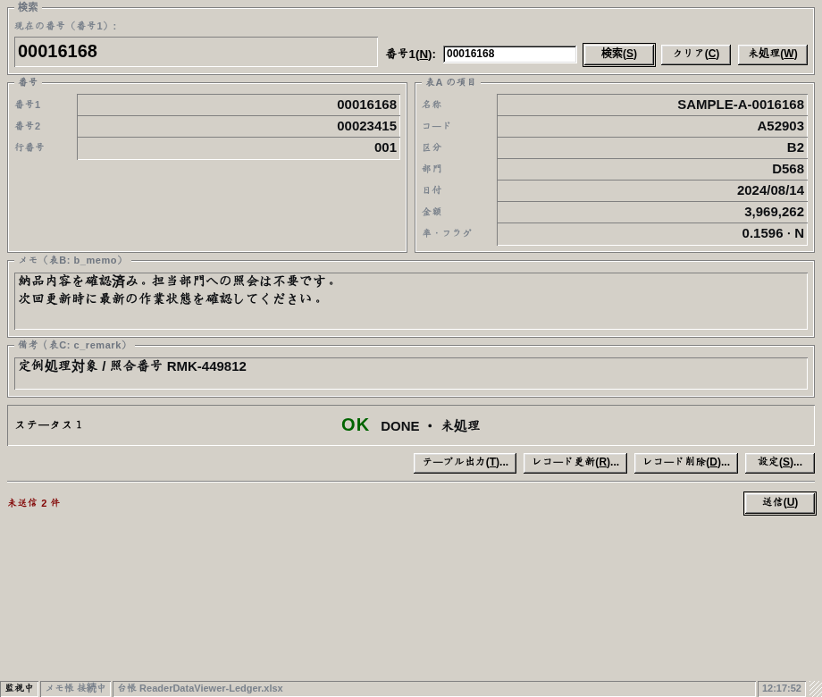
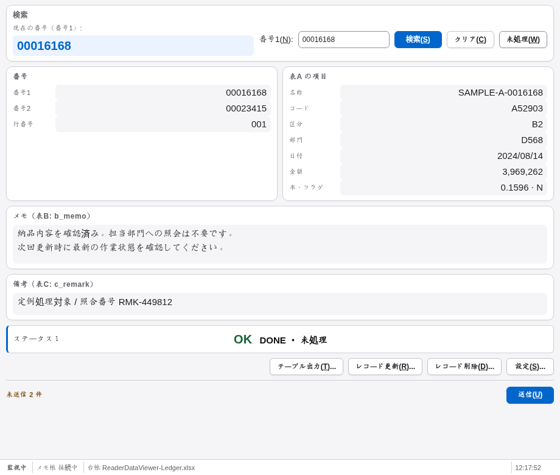
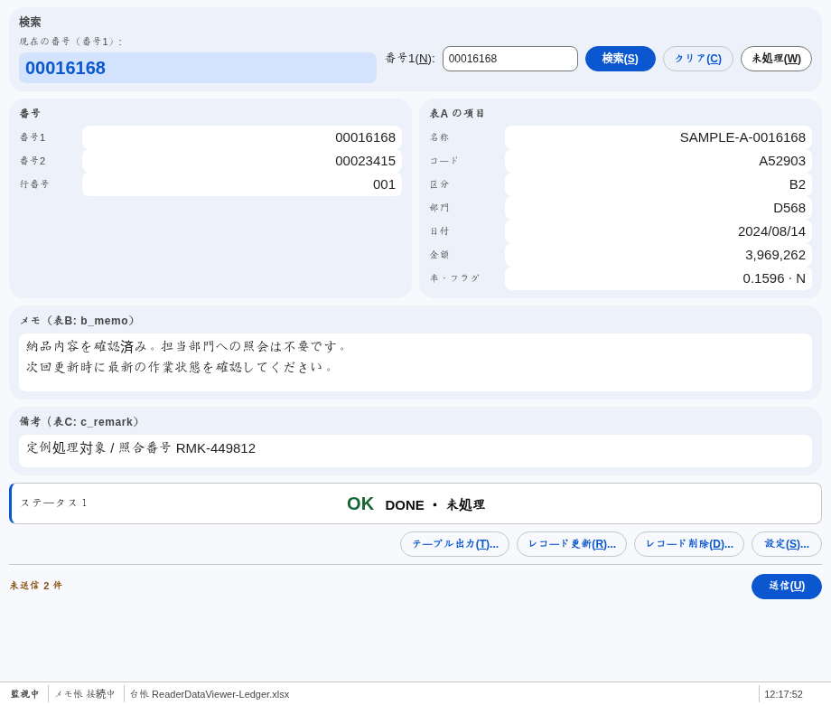
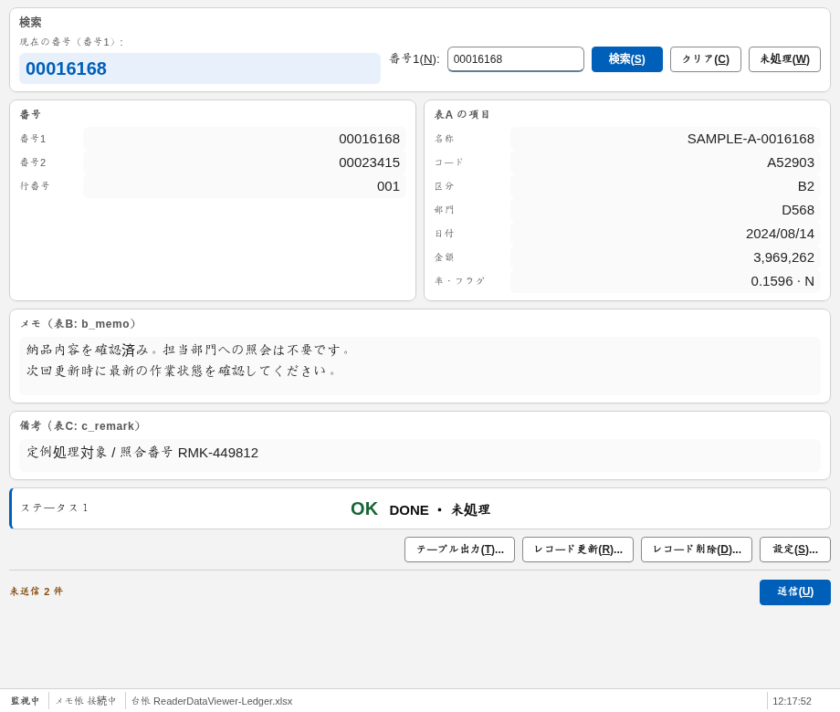
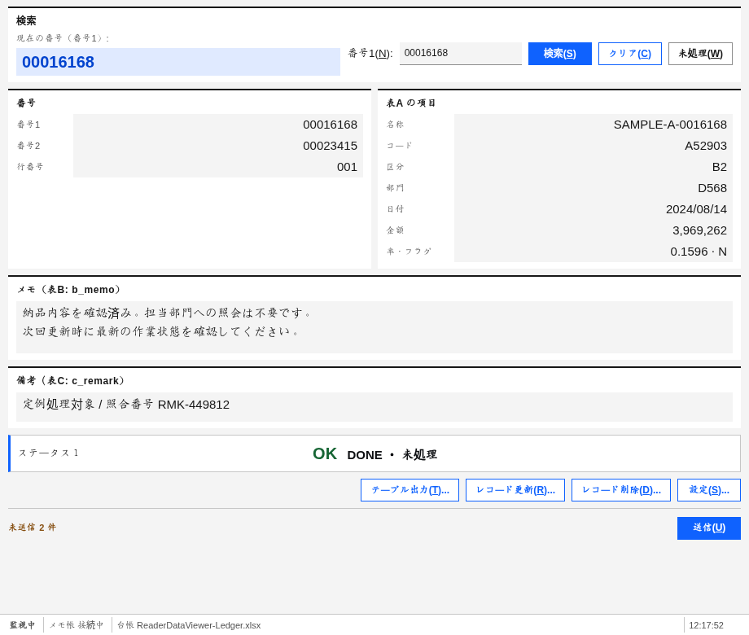
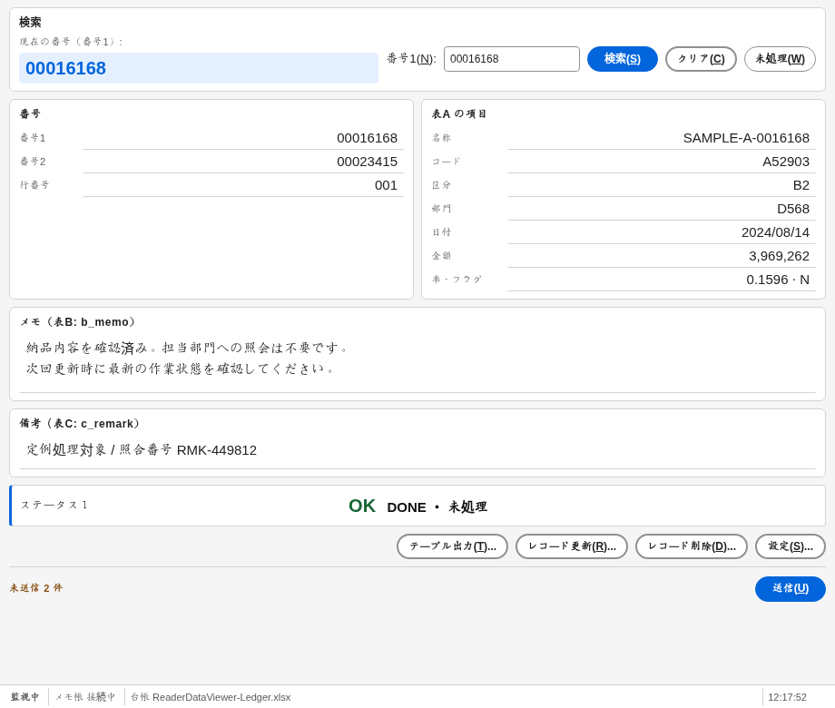

Win98 Classic + ５種類のモダンデザイン
模擬データを用いた実際のブラウザー描画です。Windowsのネイティブタイトルバーは含みません。各社の設計指針を参照した独自テーマで、公式コンポーネントの完全再現ではありません。
既存の外観・無演出 · win98
win98

ニュートラルな面・控えめな丸み · apple
apple

トーンのある面・丸い操作 · material
material

Win10/11風・入力線とフォーカス · fluent
fluent

角形・情報密度・明瞭な区切り · carbon
carbon

輪郭のある操作・中立的な作業面 · spectrum
spectrum
